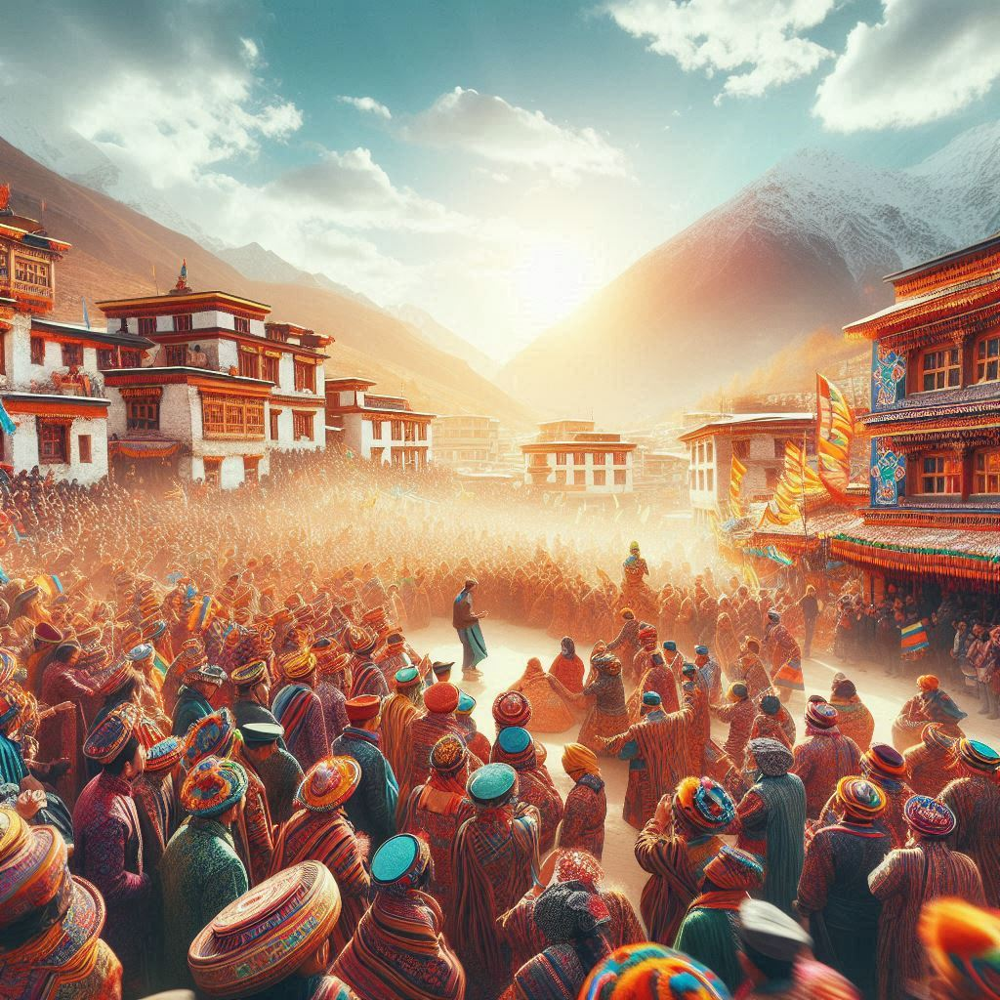
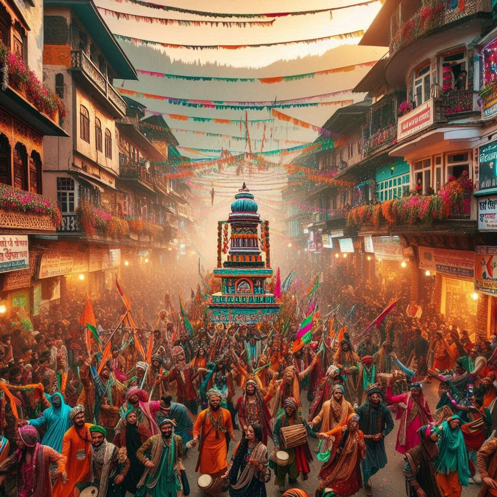

Himachal Pradesh celebrates a diverse range of festivals that reflect its rich cultural heritage, traditions, and religious diversity. These festivals are marked by vibrant dances, music, local rituals, and community gatherings. Some are rooted in Hindu traditions, while others are influenced by Buddhism and local tribal customs, each adding a unique touch to the state's culture.
1. Kullu Dussehra
- When: October/November
- Description: This famous festival, celebrated in Kullu Valley, starts when the rest of India concludes their Dussehra celebrations. It features processions of deities, led by Lord Raghunathji, cultural performances, music, and dances, lasting a week.
2. Losar Festival
- When: February/March
- Description: Celebrated by the Buddhist community, particularly in Lahaul-Spiti, Losar marks the Tibetan New Year. The celebrations include religious processions, mask dances, prayers, and feasts.
3. Mandi Shivratri Festival
- When: February/March
- Description: Dedicated to Lord Shiva, this week-long festival in Mandi town features hundreds of local deities in a grand procession, cultural performances, and trade fairs.
4. Minjar Fair
- When: July/August
- Description: Celebrated in Chamba, it marks the harvest season and includes offering a 'Minjar' to the River Ravi. The festival features traditional dances, music, sports, and fairs.
5. Phulaich Festival
- When: September
- Description: Celebrated in Kinnaur, this festival marks the blooming of flowers in the hills. Locals offer flowers to deities, followed by dances, feasts, and storytelling.
6. Lavi Fair
- When: November
- Description: Held in Rampur Bushahr, the Lavi Fair is a historical trade fair with cultural performances and the trading of wool, dry fruits, and handicrafts.


7. Sazo Festival
- When: January
- Description: Celebrated in Kinnaur, this festival involves offering prayers to local deities believed to leave the village temporarily. It includes rituals, temple visits, and feasting.
8. Diwali
- When: October/November
- Description: Like the rest of India, Himachal celebrates Diwali with lamps, sweets, firecrackers, and prayers to Goddess Lakshmi.
9. Holi
- When: March
- Description: Celebrated with zeal, particularly in Palampur and other regions, Holi includes smearing colors, dancing, and feasting.
10. Navratri
- When: March/April and September/October
- Description: Celebrated with devotion, including fasts, prayers, and goddess worship. Local fairs and dances bring communities together.
11. Christmas in Shimla
- When: December 25th
- Description: Shimla celebrates Christmas with decorated churches, carols, and festivities, attracting both locals and tourists.
12. Tribal Festivals
- Description: Regions like Lahaul-Spiti and Kinnaur hold unique tribal festivals involving rituals, dances, and offerings that reflect their connection to nature and spirituality.
Conclusion
Himachal Pradesh's festivals highlight its cultural richness and diversity. These celebrations offer a glimpse into the traditions, music, dances, and community spirit that bind its people together in joyous unity.